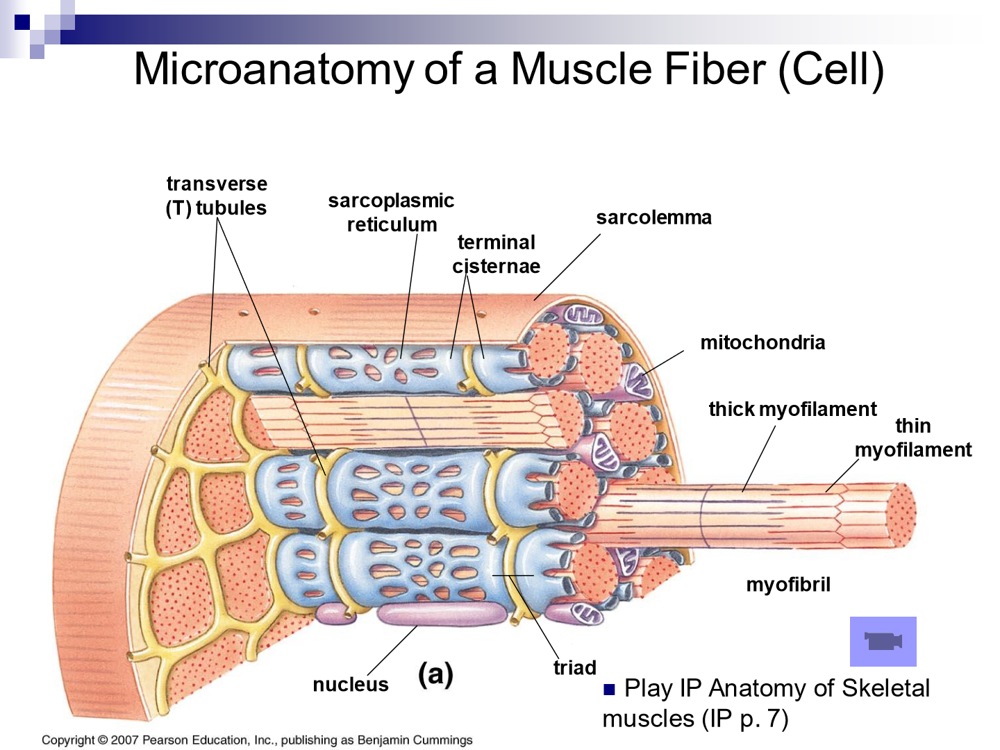

The Muscular System


You muscles are used to
Move your body
Maintain posture
Support soft tissue within the body
Guard entrances and exits in the body
Maintain body tempurature
Types of muscle tissue
Skeletal Tissue
Causes body movement
Controlled voluntarily
Produce heat and energy
Helps maintain posture
Protects internal organs

Cardiac Tissue
Involuntary Movement
Contracts to help circulate blood
Forms walls of the heart

Smooth Tissue
Makes up walls of organs and blood vessels
Involuntary Movement
Contracts to cause movement in variety of body systems

Characteristics of muscle tissie
Excitability - Muscle responds to stimulation
Contractability - Muscle can shorten and thicken
Extensibility - Muscle can lengthen
Elasticity - Muscle always wants to return to resting position after being contracted or lengthened
Muscle Anatomy
Muscle attaches at ends of bones (origin)
Muscle is attached to bones by tendons
Muscle covered and supported by membrane called fascia

Skeletal Muscle Contractions
Isotonic contraction - Change in muscle length as tension changes (eg. lifting an object)
Isometric contraction - when there is no change in muslce length even with tention (eg holding object in one position)